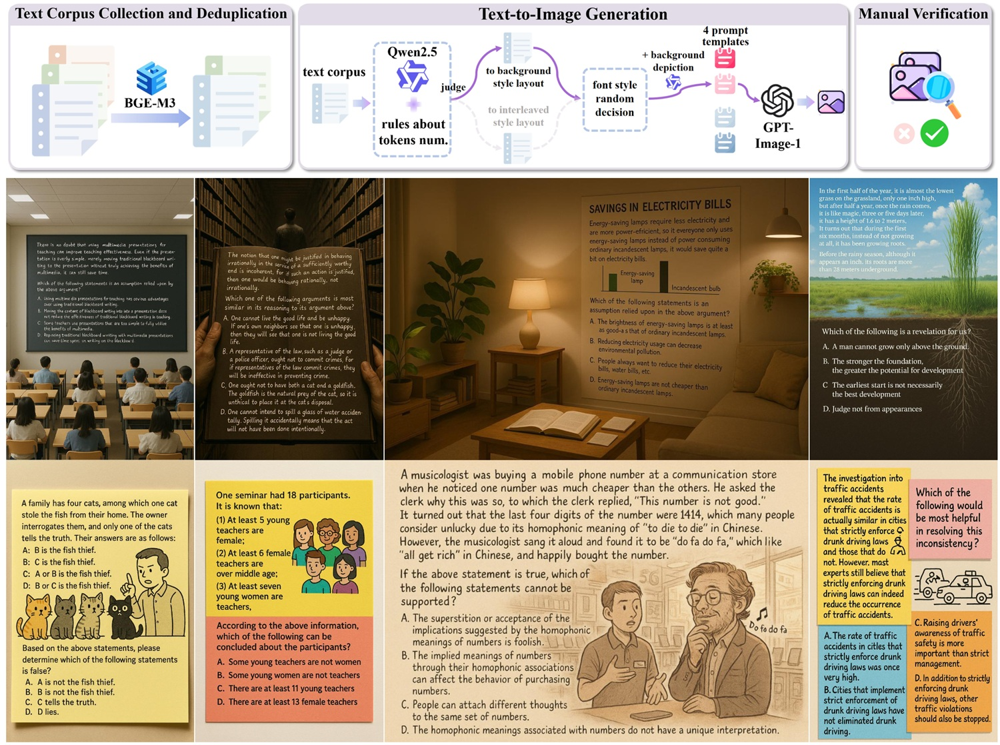

We introduce LogicOCR, a new benchmark designed to evaluate the logical reasoning abilities of Large Multimodal Models (LMMs) on text-rich images, with minimal reliance on domain-specific knowledge, such as mathematics. LogicOCR comprises 1,100 multiple-choice questions, spanning five reasoning types: categorical, sufficient conditional, necessary conditional, disjunctive, and conjunctive. We develop a scalable pipeline that leverages GPT-Image-1 to generate visually diverse, contextually grounded images from a curated text corpus, followed by manual verification.
Our evaluation of various LMMs under both direct-answer and Chain-of-Thought (CoT) settings reveals that most models do not benefit from CoT prompting, suggesting potential weaknesses in their reasoning processes. While these models excel at OCR, their performance on multimodal reasoning lags behind their text-only counterparts, indicating a gap between visual understanding and logical inference. We also show that LMMs are sensitive to visual-text orientation and benefit from test-time scaling, highlighting important factors affecting multimodal reasoning.
Motivation for Using GPT-Image-1 in Image Generation. Generated images and their source text are like modality twins, we can directly compare performance across input types by feeding plain-text questions and multimodal problems into the same LMM. This enables us to pinpoint multimodal reasoning bottlenecks in LogicOCR. GPT-Image-1 offers strong instruction-following and high-fidelity visual-text rendering, presenting a promising alternative to prior synthetic methods. Unlike those synthetic approaches, it produces more natural, vivid images without requiring complex rule design. Notably, GPT-Image-1 can intelligently adapt text placement, color, and wrapping to fit the background and surrounding elements.
Existing multimodal reasoning datasets often require extensive mathematical or scientific knowledge, making it difficult to isolate pure reasoning ability from domain expertise. In contrast, most OCR-related benchmarks lack complexity, potentially overstating LMM progress in integrating reading, understanding, and reasoning. Although CharXiv and OCRBench v2 include reasoning subsets, these are either narrowly focused on chart interpretation or rely on specialized knowledge.
Comparison of multimodal reasoning and OCR-related benchmarks. The test set sizes are reported, with only the reasoning subsets of CharXiv and OCRBench v2 included. `Knwl. Free' refers to domain knowledge-free data, while `Dense Text' contains dense visual-text in images. DocVQA focuses on document topics, whereas ChartQA and CharXiv target chart topics.
Key statistics of LogicOCR. Each sample may cover multiple reasoning categories.
Word cloud of background scenarios.
We select a variety of LMMs for evaluation, including both open-source and proprietary models. We also incorporate the models optimized for multimodal reasoning in the evaluation. We report both the performance under CoT and direct answering (only answer the option's letter) settings.
Click on CoT to expand detailed results on involved reasoning types.
| Reset | CoT | Direct | ||||||||||
|---|---|---|---|---|---|---|---|---|---|---|---|---|
| Name | Activated Params. | Date | Overall | 1 | 2 | 3 | >3 | Overall | 1 | 2 | 3 | >3 |
Overall results of LMMs on the LogicOCR leaderboard. The best-performing model in each category is in-bold, and the second best is underlined.
Most LMMs show no improvement with CoT on LogicOCR, suggesting flaws in their reasoning paths. Previous research shows that CoT is more effective for math, symbolic, and algorithmic tasks, while its utility may be limited for tasks like commonsense reasoning. Our LogicOCR benchmark presents a challenging multimodal reasoning scenario for LMMs.
Test-time scaling significantly improves performance on LogicOCR, though the efficiency of open-source LMMs still leaves room for improvement. Notably, o4-mini achieves much higher accuracy using fewer tokens than QvQ-72B-Preview.
Comparison of average accuracy and output length (completion tokens) between general LMMs and their reasoning-enhanced counterparts.
LMMs still fall short of fully integrating visual reading and reasoning. While vision-language alignment suffices for perception tasks like OCR, it remains inadequate for more complex reasoning, especially as model size grows. Therefore, achieving thorough vision-language alignment is vital for advancing multimodal reasoning in the future.
Impact of input modalities on LMMs under the CoT setting. 'Text + Instruction' denotes text-only input, where the question is provided in the text. 'Image + Instruction' refers to multimodal input, with the question embedded in the image. 'OCR Output + Instruction' represents feeding LMM's OCR-extracted text to themselves instead of ground-truth text. While this two-step strategy yields higher accuracy than direct multimodal input, it incurs significant inference overhead and contradicts the objective of end-to-end multimodal reasoning from raw visual inputs without task-specific priors.
OCR performance of LMMs on LogicOCR. The collected text corpus serves as ground truth for OCR. Results show strong OCR capabilities across models. The strong performance also highlights the high visual-text fidelity of GPT-Image-1.
The perception robustness of LMMs across different visual-text orientations needs further improvement.
Impact of visual-text orientation on LMM performance. Images were rotated 90 degrees and 180 degrees clockwise to alter text orientation. Results show that state-of-the-art LMMs are sensitive to such changes, e.g., Ovis2 and InternVL2 accuracy drops to near-random levels, while Qwen2.5-VL demonstrates greater robustness.
We analyze the error types of Qwen2.5-VL-72B during reasoning by categorizing them into six major types: 1) conceptual error, 2) logistic error, 3) argument structure error, 4) option analysis error, 5) information usage error, and 6) image reading error. These categories encompass 17 specific error types in total, though not all occur in every failure case. Definitions of each error type can be found in Appendix. To aid in analysis, we use o4-mini, with the prompt template provided in Appendix. Our analysis is based on 191 instances where Qwen2.5-VL-72B fails, but o4-mini gives correct answers.
Error analysis for Qwen2.5-VL-72B reveals three main issues: misinterpretation, overlooking key information, and conditional fallacy.
@article{ye2025logicocr,
title={LogicOCR: Do Your Large Multimodal Models Excel at Logical Reasoning on Text-Rich Images?},
author={Maoyuan Ye and Jing Zhang and Juhua Liu and Bo Du and Dacheng Tao},
booktitle={arXiv preprint arXiv:},
year={2025},
}